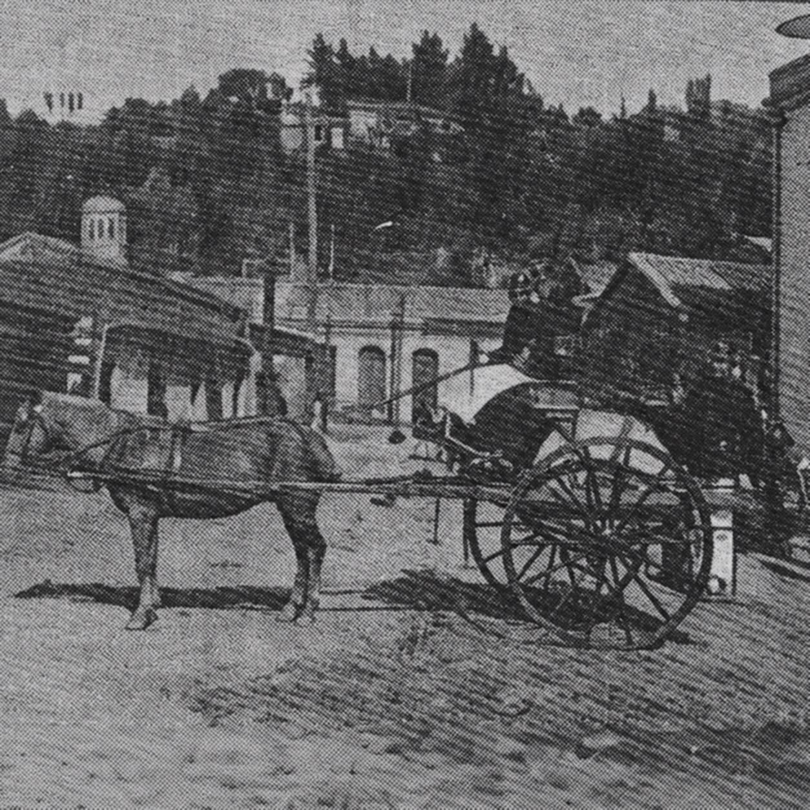
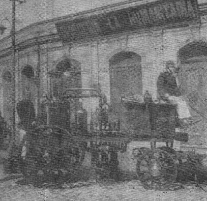

Las máquinas de una compañía de bomberos constituyen su principal herramienta de trabajo. La correcta distribución, mantención y renovación del material mayor permite enfrentar las emergencias con seguridad y eficacia.
Conoce nuestras unidades de servicio y el material mayor que ha formado parte de la historia de la Quinta Compañía de Bomberos de Talcahuano.
Unidades en servicio
 Unidad B-5Iveco Magirus FF150E30 (2018). Unidad de control de incendios.
Unidad B-5Iveco Magirus FF150E30 (2018). Unidad de control de incendios.
 Unidad MX-5Scania-Ziegler/Cela TLF 40/12 + ALP 330X (P410). Plataforma aérea para rescates de difícil acceso y control de incendios en edificios.
Unidad MX-5Scania-Ziegler/Cela TLF 40/12 + ALP 330X (P410). Plataforma aérea para rescates de difícil acceso y control de incendios en edificios.
 Unidad RX-5MAN-Magirus LF 30/20 (2024), TGM 18.320. Rescate técnico pesado y control de incendios.
Unidad RX-5MAN-Magirus LF 30/20 (2024), TGM 18.320. Rescate técnico pesado y control de incendios.Unidades históricas
La evolución de nuestro material mayor desde 1908. Esta selección se basa en la presentación institucional Historia de la Compañía (16 de mayo de 2020), desde la diapositiva 29; se incluye aquí a las unidades BX-5 y Mauricio II (Harbor 28), hoy consideradas históricas.

GalloAño 1908
Usines Beduwé «Bomba Chile»Año 1911 Hansa Lloyd «Bomba Flanders»Año 1927
Hansa Lloyd «Bomba Flanders»Año 1927
 Ford «Bomba Champion»Año 1941
Ford «Bomba Champion»Año 1941
 Magirus DeutzAño 1954
Magirus DeutzAño 1954
 Berliet-CamivaAño 1973
Berliet-CamivaAño 1973
 Renault Camiva S-170Año 1990
Renault Camiva S-170Año 1990
 Renault Camiva B-110Año 1994
Renault Camiva B-110Año 1994
 Renault Camiva S-150Año 1999
Renault Camiva S-150Año 1999
 Mauricio II / Harbor 28Año 2001 · Embarcación de rescate medioambiental.
Mauricio II / Harbor 28Año 2001 · Embarcación de rescate medioambiental.
 BX-5 – Iveco MagirusAño 2012 · Antigua unidad mixta de incendio y rescate.
BX-5 – Iveco MagirusAño 2012 · Antigua unidad mixta de incendio y rescate.